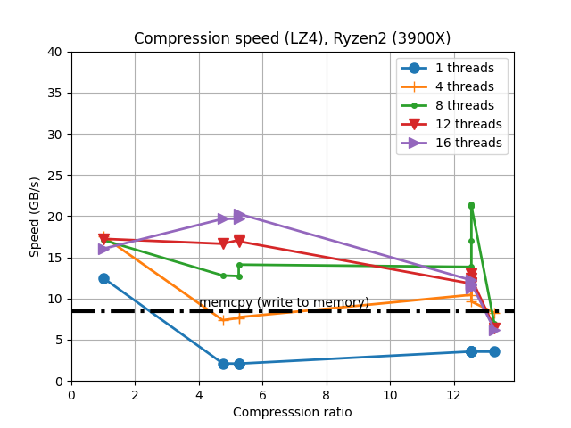

What Is Blosc?
Blosc is a high performance compressor optimized for binary
data. It has been designed to transmit data to the processor cache
faster than the traditional, non-compressed, direct memory fetch
approach via a memcpy() OS call. This can be useful not only
to reduce the size of large datasets on-disk or in-memory, but also to
accelerate memory-bound computations (which is typical in vector-vector
operations).
It uses the blocking technique (as described in this article) to reduce activity on the memory bus as much as possible. In short, the blocking technique works by dividing datasets in blocks that are small enough to fit in L1 cache of modern processor and perform compression/decompression there. It also leverages SIMD (SSE2) and multi-threading capabilities present in nowadays multi-core processors so as to accelerate the compression/decompression process to a maximum.
To whet your appetite look at the kind of speed that Blosc can reach for BloscLZ, its default codec:
|

And here for LZ4, a well known and very fast codec that comes integrated (with other codecs too) with Blosc:
 |
|

You can see more benchmarks in [our blog](https://www.blosc.org). Also, you may want to check out this article on Breaking Down Memory Walls. Also, check Blosc2, the next generation of Blosc.

Blosc is a fiscally sponsored project of NumFOCUS, a nonprofit dedicated to supporting the open source scientific computing community. If you like Blosc and want to support our mission, please consider making a donation to support our efforts.
Meta-Compression And Other Advantages Over Existing Compressors
Blosc is not like other compressors: it should rather be called a meta-compressor*. This is so because it can use different compressors and pre-conditioners (programs that generally improve compression ratio) under the hood. At any rate, it can also be called a compressor because it ships with its very own compressor and one pre-conditioner, so that it can work in a standalone fashion.
Currently, Blosc uses BloscLZ by default, a compressor heavily based on FastLZ. From version 1.3 onwards, Blosc also includes support for LZ4 and LZ4HC, Zlib and Zstd. Also, it comes with a highly optimized (it can use SSE2, AVX2 or NEON instructions, if available) shuffle and bitshuffle filters.
Of course, almost every user has her own needs, and in Blosc2 we are working on making possible for her to register different codecs and filters so that they can fine tune Blosc for different scenarios.
Blosc is in charge of coordinating the compressor and filters
so that they can leverage the blocking technique (described above) as
well as multi-threaded execution (if several cores are available)
automatically. That makes that every compressor and pre-conditioner
will work at very high speeds, even if it was not initially designed
for doing blocking or multi-threading. For example, Blosc allows you
to use the Zlib codec, but in a multi-threaded mode.
Other advantages of Blosc are:
Meant for binary data: can take advantage of the type size meta-information for improved compression ratio (using the integrated shuffle pre-conditioner).
Small overhead on non-compressible data: only a maximum of (16 + 4 * nblocks_used) additional bytes over the source buffer length are needed to compress every input.
Maximum destination length: contrarily to many other compressors, both compression and decompression routines have support for maximum size lengths for the destination buffer.
Replacement for memcpy(): it supports a 0 compression level that does not compress at all and adds very little overhead. In this mode Blosc can even copy memory faster than a plain memcpy() because it uses multi-threading.
When taken together, all these features set Blosc apart from other similar solutions.
Where Can Blosc Be Used?
Blosc was initially developed for the needs of the PyTables database and the bcolz project, although it may be used elsewhere where a fast compressor is needed. Also, you may want to use the new Bloscpack format and reference implementation for much easier access to the main Blosc features and benefits, also from the command line.
Applications using Blosc/Bloscpack are expected to allow I/O performance to go beyond expected physical limits. For example, PyTables benefits from Blosc for its indexing and query operations in extremely large tables. Even in-memory computations can go faster in some cases as well (for example, see this IPython notebook)
Is It Ready For Production Use?
Yup, it is!
The PyTables community has contributed testing Blosc very hard, and I'm happy to say that, since version 0.9.5 on, it worked flawlessly compressing and decompressing hundreds of Terabytes (coming from the hardsuite and extremesuite in the included benchmark) on many different Windows and Unix boxes, both in 32-bit and 64-bit. Of course, that does not mean that Blosc doesn't contain bugs, but just that grave bugs are unlikely.
Moreover, with the introduction of Blosc 1.0, it has been declared stable, and both the API and the format have been frozen, so you should expect a large degree of stability for your Blosc-powered applications.
Git repository, downloads and ticketing
The home of the git repository for all Blosc-related libraries is located at:
You can download the sources and file tickets there too.
Mailing list
There is an official Blosc blosc mailing list at:
Python wrapping
You can find a Python package that wraps Blosc at:
Command line interface
Bloscpack, a serialization format using Blosc and a reference implementaion, is equipped with a nice command line tool which can compress existing binary datasets on-disk. It also has built-in support for compressing and serializing Numpy arrays, both in-memory and on-disk:
https://github.com/Blosc/bloscpack
Although the format may still mutate, Bloscpack is making large strides for becoming a great utility.
Want To Contribute?
Your contribution is very important to make Blosc as solid as possible. If you detect a bug or wish to propose an enhancement, feel free to open a new ticket or make yourself heard on the mailinglist. Also, you can contribute to this project by simply compiling and running different benchmark and test suites on your own hardware, as explained in the SyntheticBenchmarks page.
Blosc License
Blosc is free software and released under the terms of the very permissive BSD license, so you can use it in almost any way you want!